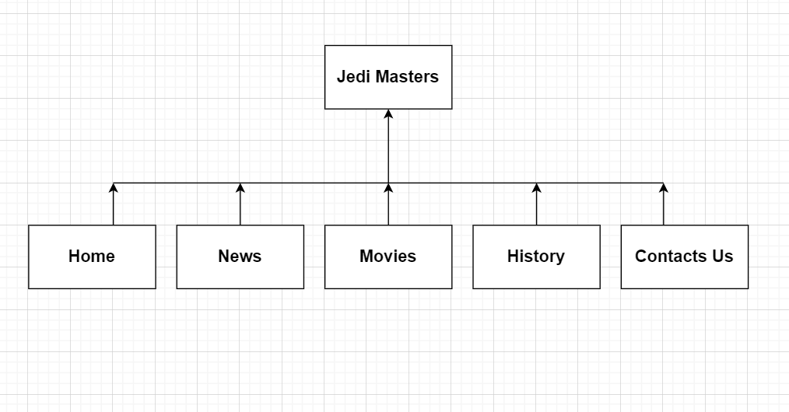

Report
Bayarbat Bayarsaikhan
Introduction
My website is a fan magazine of Star Wars that aims to inform the fans about what new things happening in Star
Wars world through every medium whether it be films, series, and games. However the website is not only for
already existing Star Wars, we have pages like Movies and History that aims to help casual people who are interested.
To make it simple and intuitive for users I decided on this 5 page template with flat structure:
- Home
- News
- Movies
- History
- Contact Us

State 3 things that have inspired you when creating your website.
- Biggest inspiration while building my own website was official Star Wars website starwars.com.
I wanted to emulate their simplistic yet stylish dark, white, and muted grey colors. Also one more thing
that influenced my website is their star background image that engulfes everything on the website. While
not as good, I hope my rendition can touch people like the official website.
- While ago I came across a website made by a single developer that was made by pure CSS "http://www.species-in-pieces.com/#". While it did not
influence any part of my website directly, this inspiration wanted me to push and explore more into vanilla CSS.
-
I was inspirted by how minimalistic but still highly usable/functional Instagram and Facebook are. There is not
a lot of highly technical animation in either of them but Meta finds that good meduim that makes it simple and effective
State 3 ways in which your site is accessible.
Every page has been accessiblity checked through both WAVE Web Accessibility Evaluation Tool and Googles Lighthouse
to make sure it is accessible for people with disabilities
- First, every page has proper font size and color that contrast the background so people with visual impairment
can texts on the website
- Also every picture has been tagged with proper and consice alt description so people who uses screen reader can navigate the website
without problem.
-
Lastly, I made so every actionable elements like buttons and links are accessible through TAB key so people
who only use keyboard to navigate can reach every part of the website.
State 3 ways in which you have considered usability in your site
- While we live in a era where fast internet connection is common thing, there are still lot of people who has poor connection.
By using Google Lighthouse audition report the website has been improved in performance and usability. Not only every picture has
changed to smaller JPG format instead of PNG, pictures have been also sized properly to reduce to size and improve performance.
On top of that embeded youtube video has loading attribute lazy so it does not affect the performance unless user wants to play
the video
-
More and more people are using mobile phones to navigate through the web. To accommodate that my website works on wide
range of variety of devices from wide screen to tablet to phone. Responsive design increase the usability through making
it easy to navigate while on phone whether it by changing the font size or morphing into entirely new layout.
-
Other small convenience goes long way to improve UX and usability. My website reacts to user interaction by
buttons and pictures gets bigger, links changes color to indicate that it's actionable element. There are also
small convenient things like scroll to top button and logo directing to home page are implemented.
State 3 things you had to learn/find out by yourself when creating your site, and describe
how you did that
- Before this course I was complete beginner in HTML, infact my first website was themepark website my team
made during midterm. While learning both HTML and CSS as beginner was challenge, it was a fun ride so much
so that I am thinking about changing my specialization to Web Dev. Best thing that helped me start was "HTML5 and CSS3 for Dummies"
by Andy Harris.
- I have been using websites since I was a child, but never knew how much developers put
into their website to make it accessible for everyone. First time I ran Wave accessiblity check I had 14 errors
and 20 warnings. I read through every single one of them and got to know how helpful small accessiblity addition
to the code can be to other people.
-
Most fun I thing learned was CSS grid and CSS flex. Playing around with both of them gave me good understanding
when to use either one of them. While flexbox is great for aligning things in one dimension through justify-content
and align-items, I found grid to be much more useful when designing content with lot of components like the History page.
Use of two dimensions with row and columns was much more easier to style.
What aspect(s) of your work do you think worked well and why?
For a second ever website I made, I am proud that I was able to create simple yet effective and nice looking
website. I think the best part of my website is Javascript. Pretty much every page uses Javascript DOM to manipulate
elements position, display, and color. While I learned it just few months ago, I am also proud of my HTML usage.
I believe I used wide variety of tags from unordered list, ordered list, section, footer, header, list and paragraph.
For CSS part I was able to figure out and use some complex ideas like accordian dropdown for FAQ section and hamburger
navigation with just tinkering around.
What aspect(s) of your work could be improved, and how might you do things differently
another time?
While I made considerable effort in accessiblity part, I will try to improve it even more by adding features like
Dyslexic font, text size slider, and white mode for people who have difficulties reading in dark mode. Also I would love
to implement much more diverse medias such as a music when the page first load.
For things I would do differently: I would like to experiment and use much more CSS animation. When I first started
I wanted to implement introduction like Star Wars movies where text fly from bottom to top, but gave up after few tries
after learning how difficult it would be to actually code. Next time I will have my "A long time ago in galaxy far, far away"
For reference: "https://www.youtube.com/watch?v=iXDnFYu91vY&ab_channel=allluckyseven".
What resources were used when creating your work?
Code resources that were direcly imported with improvement and adaptation
- dcode, Create Scroll-to-top Button with HTML,CSS , 2019 [Online], Available: https://www.youtube.com/watch?v=FK5DEa1Hvco&ab_channel=dcode [Accessed: 15-Aug-2022]
- Web Dev Simplified, Learn Intersection Observer, 2021 [Online], Available: https://www.youtube.com/watch?v=2IbRtjez6ag&ab_channel=WebDevSimplified [Accessed: 8-Aug-2022]
- w3schools.com, How to - Mobile Navigation Menu, N/A [Online], Available: https://www.w3schools.com/howto/howto_js_mobile_navbar.asp [Accessed: 16-Aug-2022]
Resources that was not put into my code direclty but inspired or taught me about HTML and CSS
- Andy Harris, HTML5 and CSS3 for Dummies, 2014 [Book]
- w3schools.com
- https://developer.mozilla.org/en-US/
Pictures I used taken from:
- https://en.wikipedia.org/wiki/File:Star_Wars_Logo.svg
- https://www.disneyplus.com
- https://www.starwars.com
- https://www.direct8.fr/en/series/obi-wan-kenobi-the-new-mini-series-of-disney/
Libraries used for icons:
https://fontawesome.com/